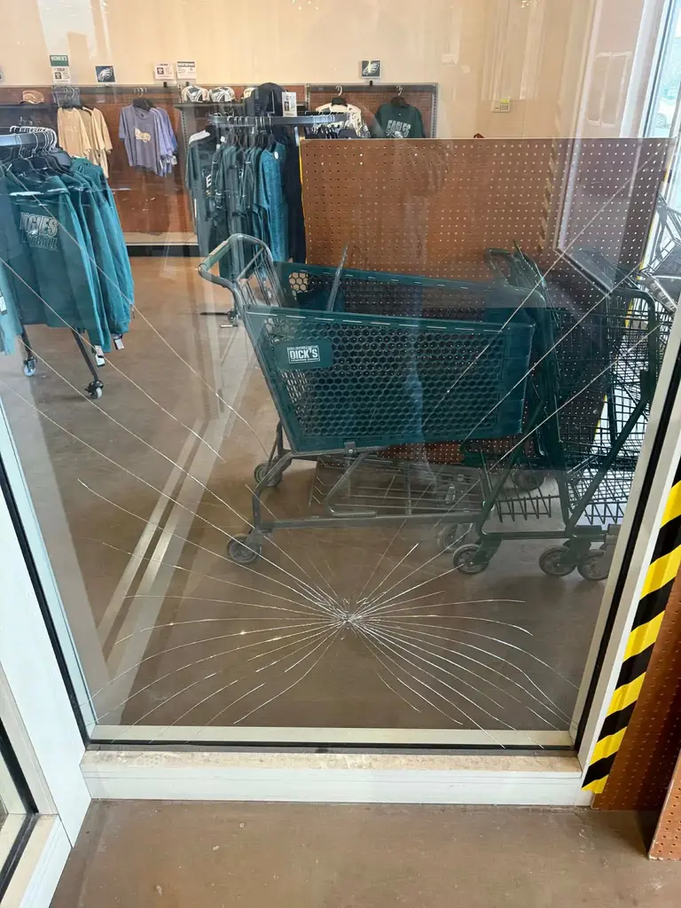
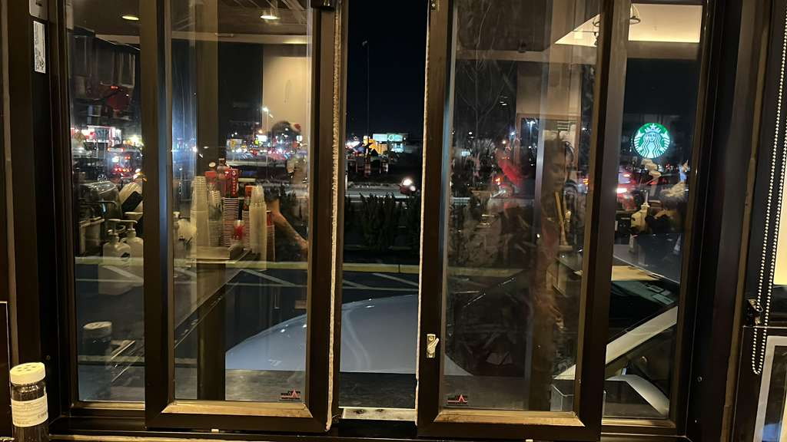

Storefront Glass Services We Provide
Storefront work involves more than just "a piece of glass." We evaluate the glass type, safety requirements, framing, and how the door system operates before recommending a solution. Common storefront glass repairs include:
- Tempered glass replacement for storefront panels, door lites, sidelites, and transoms
- Laminated safety glass installation for high-traffic storefronts
- Damaged sidelites and transom repairs
- Insulated glass units (IGUs) for energy-efficient storefronts
- Emergency board-up and temporary protection
- Full storefront glass system replacements
- Custom-cut glass panels for unique storefront designs
If the issue is the framing system itself (leaks, movement, alignment), see Storefront Framing Repair.
Storefront Glass Repair Gallery
Examples of storefront glass, door, and framing conditions:




Emergency Storefront Glass Repair
If your storefront glass is broken and the opening is unsecured, we prioritize safety and security first. Our emergency team will board up and secure the opening, then coordinate replacement glass and schedule professional installation.
Storefront glass emergency? Call 202-643-4062 right now. See also our dedicated Emergency Glass Repair page for more details.
What to Discuss by Phone
- The opening type and approximate measurements, if known
- Approximate width/height of the panel
- Whether it's street-facing and needs immediate security
- Any glass stamp markings (if visible)
For scheduled storefront glass replacements and upgrades, call 202-643-4062. describe the opening, damage, and access conditions during the call.